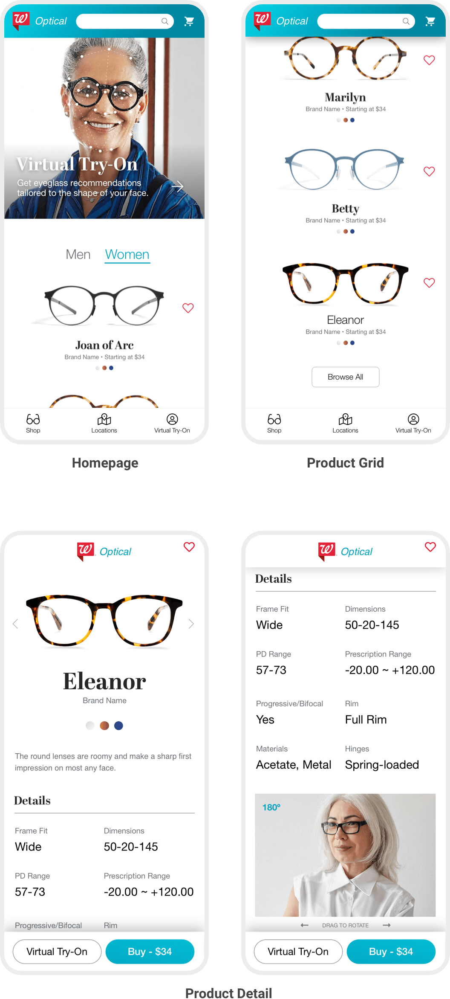
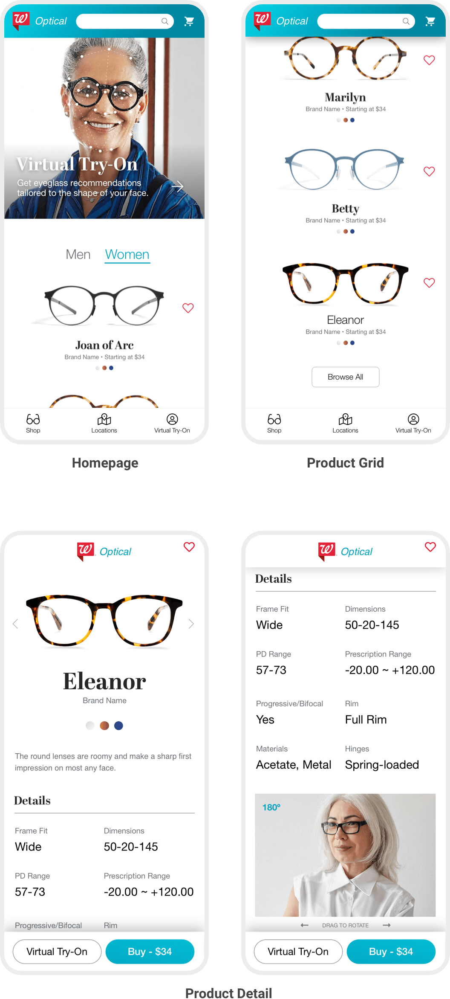

The information, insights, and conceptual solutions described in this presentation are the result of primary and secondary research, our first-hand experience as consumers and lifelong Walgreens customers, and our professional expertise as experience designers. This presentation is intended to illustrate our process and approach to problem solving and digital product design.
To be a force for good in the world by championing accessible health care, supporting the places in which we live and work, treating people with dignity and respect, protecting the environment and carrying quality products.”
What We Know
Founded in 1901 as a single drugstore, Walgreens is a provider of trusted care in communities around the U.S. Walgreens has a history of breaking new ground to meet its customers' needs and improve their health, from offering self-service stores beginning in the 1950s to developing a highly rated mobile app today.
The company operates through three segments: Retail Pharmacy USA, Retail Pharmacy International, and Pharmaceutical Wholesale.
With its brand as a foundation, Walgreens is building its business in four areas: pharmacy, front end, health care services, and consumer services.
Challenges
What We Think
The market intelligence we've gathered to date tells us that Walgreens has an opportunity for growth in the following areas.
1. Millenial Retail Power
2. Concierge Models
3. Tech Innovation
Ideas
Our research, strategy, design, and technology teams dug into the pharma-retail landscape to benchmark competitors and catalog current offerings and trends to provide the context we needed to inform potential solutions. In total, we generated over a dozen concepts to fill the gaps in the areas we identified.

Which Made the Cut?
We evaluated these concepts against our self-defined criteria and ultimately identified two concepts to explore in greater detail.
1. Optical Experience - B2C
A multi-device digital solution integrated with augmented reality technology will enhance the traditional retail-optical experience and enable Millennials, Baby Boomers, and everyone in between to browse, try, and buy non-prescription eyeglasses in-store, on the road, or from the comfort of their homes.
2. Reduce Pharma Loss - B2B
Every year, stockpiled medications and medical supplies expire before they can help improve the lives of their intended audiences. This digital platform provides pharmaceutical supply chain stakeholders visibility to the critical product data (e.g., location, expiration date, time to destination, etc.) to optimize inventory, reduce waste, and boost revenue.

Walgreens believes vision care, combining health and fashion, has potential as an expanded offering as it strives to be America's most-loved pharmacy-led health, well-being and beauty retailer...”
The Market
The U.S. eyewear market was $31.7 billion in 2018 and is projected to reach $34 billion by 2023. The U.S. market includes retailers like Lenscrafters, Walmart, and Costco and online retailers like Warby Parker, Zenni, and Topology.
14% of total revenue will be generated through online sales by 2023.
Testing the Waters
Walgreens is piloting a retail optical experience at ten locations in the Chicago area to test the viability of the offering.
The Opportunity
As the self-service trend continues to rise across all demographics, digital offers an opportunity to extend and enhance the retail optical experience.
An engaging web-based application will enable customers to browse, virtually try-on, and buy glasses through an in-store kiosk and on their own devices.
Research
We deployed a 21-question survey to the general U.S. population to gauge behaviors and attitudes towards eye exams, purchasing habits, satisfaction with retail and online experiences, and the desirability of a digital solution.
Age
Participants ranged in age from 18 to 75+.
Eye Exam Location
Most have their eye exam at an optometrist's office.Purchase Location
Most purchase eyeglasses through their optometrist, a local retailer or specialty store.Purchase & Pickup
Most said the ability to purchase and pick-up in-store is important or very important.Online Satisfaction
Those who have purchased eyeglasses online noted that they were very satisfied or satisfied with the experience.Solution Desireability
The desire for a digital solution to enable customers to virtually try-on and purchase glasses was mixed.
Personas
Using the research collected to date, our team created 'proto personas' to give our audiences a face and evaluate why they might (or might not) be interested in our augmented reality enabled digital solution.
Susan
- +60 years of age
- Retired, self-employed making under $50k/year
- Lives in the outer suburbs
- PC / iPhone
- Late majority/laggard
- Gets eyes examined at an optometrist
- Has used prescription glasses for 30+ years
David
- 45-60 years of age
- Professional
- $100k-$125k/year
- Lives in the suburbs
- PC / Android
- Early majority
- Gets eyes examined at optometrist
- Primarily uses readers
Maya
- 18-29 years of age
- Professional
- $50-$75k/year
- Lives in an urban area
- Mac / iPhone
- Early adopter
- Gets eyes examined at local optical specialty retailer
- Purchased an additional pair of eyeglasses online
Projected Roadmap
We defined and prioritized features, capabilities, and requirements for the potential digital solution and organized these into phases based on business and audience needs and the level of effort needed to realize each requirement. The resulting high-level product roadmap is a work-in-progress and will be evolved as additional requirements are gathered.
The Solutions
The solution ecosystem consists of the following components - each one operating in conjunction with the other to deliver a seamless experience.

In-Store
With over 9,000 Walgreens locations in the continental U.S., using the in-store experience to reach potential customers and communicate this new and exciting offering is not only a no-brainer but vital. We conducted on-site visits to several Walgreens stores in the U.S. to document the current in-store experience and inform our concept. The configuration of the retail concept varies depending on the unique attributes of each location (e.g., location, community demographics, etc.).

Current Display
- Products were organized by price and prescription level but were densely packed.
- Difficult to distinguish the frame style, fit, and quality.
- Small warped mirror in the center was easily missed and not accessible for shorter individuals.
- Accessories were not in their own section.
- Customers have to dig to find the right fitting frames.
- Glasses are not put back where they belong, which leads to customer confusion.
- Prescription guide only on one side - small footprint.
- Process of selecting frames can be time consuming.
- Products are not handled with care.
Configuration 1: Self-Service Experience
Our first configuration either relies on modifications to an existing retail display or the fabrication of a new POP display to include a digital interface which serves as the customer's primary point of interaction. The digital interface enables customers to browse Walgreens' full selection of eyeglasses, simplifying the shopping experience and reducing the clutter of the current POP display.

Configuration 2: Assisted Experience
Our second configuration combines the digital interface from our first configuration with an area for an optometrist or optical sales associate to assist the customer with product selection, fittings, ordering, and pickup to provide more personalized service.


A Responsive Website
A responsive or adaptive marketing website features the service details, Walgreens' eyewear catalog, an interactive fit-quiz recommendation engine, location finder, links to download the native apps, and access their account.
The responsive website delivers a consistent experience in terms of presentation and functionality across all devices to support SEO and marketing efforts.
Native Mobile App with Augmented Reality
The native mobile app for iOS and Android picks up where the responsive website leaves off. The native app lets us take advantage of the mobile device's camera to support augmented reality features that enable customers to virtually try-on frames and elevate the experience.
 

Summary
Walgreens' retail presence and modern technologies will enable us to deliver a superior optical experience to meet the needs of current and potential customers across all audience demographics, spur growth in an existing product and service segment and show Walgreens' dedication to innovation which can positively impact customer retention.
Every year the movement of global inventory including raw materials, WIP, and finished goods contributes to significant losses for product manufacturers and retailers alike.
Consignment and stockpiling of perishable goods require a watchful eye. Every year millions of dollars are lost in products. This is applicable to many industries but is especially important when concerning pharmaceutical products designed to improve and extend our lives.
Our concept apples business intelligence to aggregated data streams, with the intent to better assess, streamline and redefine inventory movement. Through business rules and the latest data practices, transactional recording and analysis, and reporting, the system can intelligently produce indispensable views into global machinations of complex supply chains.
Please contact us to learn more about our process, the concepts described above, and how Wayfinder can help you.
Wayfinder is a digital experience design agency specializing in solutions that extend and enhance our clients' brands and enable their success. We plan and conduct research and design and develop websites and applications that educate, enable, entertain, and entice your audience.